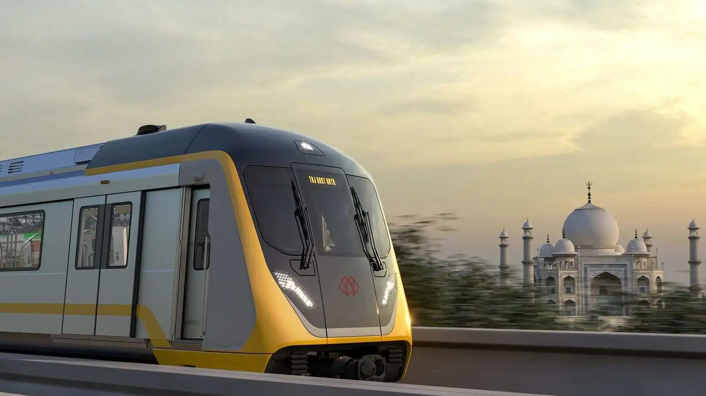

Eng
Mon-Fri, 8:00 - 18:00
Help
Log In

Yangiliklar

"Toshkent Metropoliteni" DUK da "Diniy ekstremizm va fundamentalizmiga qarshi kurash" mavzusida davra suhbati tashkil etildi.

"Toshkent Metropoliteni" DUK da "Korrupsiyaga qarshi kurashish davr talabi" mavzusida davra suhbati bo'lib o'tdi.

Favqulodda vaziyatlar boshqarmasi hamkorligida Chilonzor elektrodeposida profilaktik tadbir hamda tushuntirish ishlari amalga oshirildi.

"Toshkent Metropoliteni" DUK uchun 2 100 000 AQSH dollari ekvivalentida grant mablag'lari ajratildi.